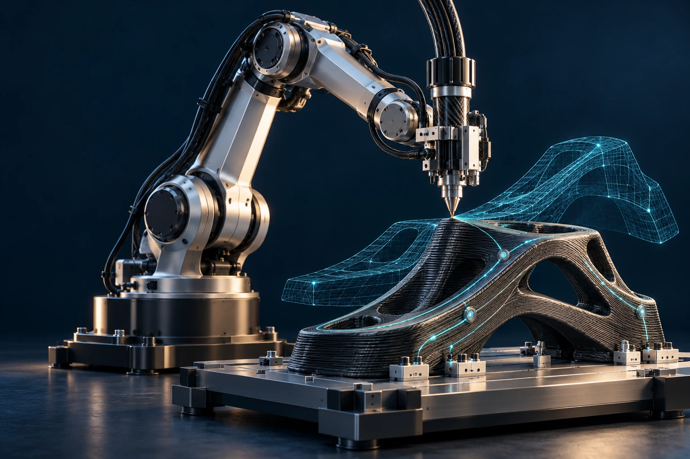

Better processes.
Smarter materials.
Understand what happens during fabrication. Embed intelligence in materials and use real-time measurements to improve manufacturing quality.
Explore intelligent manufacturingAdvancing manufacturing through sensing, intelligence, and autonomy.

San José State University / Mechanical Engineering
Intelligence from the material up.
We connect manufacturing, embedded sensing, and computational models to help engineered systems understand their condition—and respond. Our research spans the materials we make, the signals we measure, and the decisions machines take.
Understand what happens during fabrication. Embed intelligence in materials and use real-time measurements to improve manufacturing quality.
Explore intelligent manufacturingConnect sensing, digital twins, robotics, and controls to develop systems that can adapt to changing conditions and production needs.
Explore autonomous systemsManufacturing, sensing, and control belong in the same conversation.
01 / SENSING
Embedded sensors capture the physical world: strain, temperature, geometry, and motion.

Emmanuel A. Ogunniyi, Ph.D.
Research at the intersection of smart manufacturing, flexible electronics, structural health monitoring, digital twins, and real-time decision-making.
Department of Mechanical Engineering
San José State University
Explore research, student research, and opportunities to collaborate.